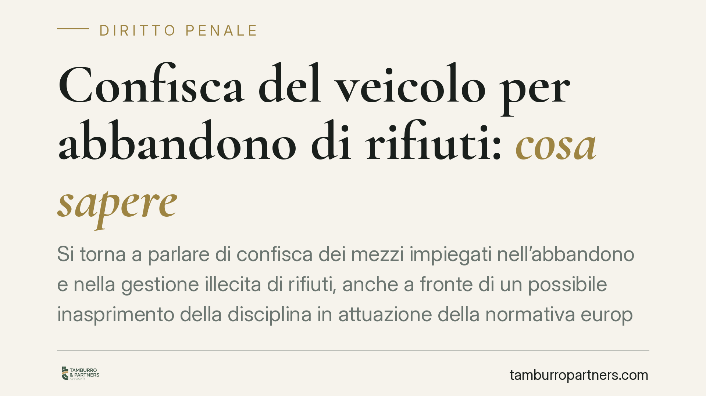

Confisca del veicolo per abbandono di rifiuti: cosa sapere
Si torna a parlare di confisca dei mezzi impiegati nell'abbandono e nella gestione illecita di rifiuti, anche a fronte di un possibile inasprimento della disciplina in attuazione della normativa europea sull'asset recovery. Prima di dare per acquisite novità ancora in via di definizione, conviene mettere a fuoco cosa già prevede l'ordinamento e quali cautele restano attuali per chi gestisce rifiuti nell'attività d'impresa.

Una premessa necessaria sulle fonti
Circolano notizie su un presunto decreto legislativo che introdurrebbe nuove ipotesi di confisca obbligatoria per i reati di abbandono e gestione illecita di rifiuti, con decorrenza indicata in modo puntuale. Allo stato, un provvedimento con quei riferimenti numerici e quella data di entrata in vigore non risulta verificabile su fonte ufficiale (Gazzetta Ufficiale).
Per serietà verso il lettore, trattiamo quindi il tema distinguendo nettamente ciò che l'ordinamento già prevede da ciò che è, al più, in discussione. Chi volesse fondare scelte operative su una norma specifica dovrà attendere la pubblicazione in Gazzetta Ufficiale e verificarne testo, numero e decorrenza.
Il quadro normativo già vigente
La gestione illecita dei rifiuti e le condotte di abbandono sono disciplinate dalla parte IV del d.lgs. 152/2006 (Codice dell'ambiente). L'art. 256 punisce la raccolta, il trasporto, lo smaltimento e la gestione di rifiuti senza autorizzazione, e prevede già oggi la confisca del mezzo di trasporto in determinate ipotesi.
Accanto a ciò operano gli strumenti generali del codice penale: la confisca facoltativa delle cose che servirono a commettere il reato (art. 240 c.p.) e, per i reati ambientali inseriti tra i delitti del Titolo VI-bis del Libro II (artt. 452-bis e seguenti), la confisca obbligatoria prevista dall'art. 452-undecies c.p., che include anche la confisca per equivalente.
Sul piano europeo, la direttiva UE 2024/1260 riguarda in generale il recupero e la confisca dei beni (*asset recovery*): fissa standard comuni su congelamento, confisca e gestione dei beni provento di reato. Non è una disciplina settoriale sui rifiuti. Il suo recepimento potrà incidere anche sui reati ambientali, ma attribuirle oggi un contenuto specifico in materia sarebbe una semplificazione fuorviante.
Che cos'è la confisca per equivalente
È utile chiarire un concetto spesso frainteso. La confisca ordinaria colpisce il bene direttamente collegato al reato: il furgone usato per il trasporto illecito, il profitto materialmente conseguito.
La confisca per equivalente interviene quando quel bene non è più aggredibile — venduto, disperso, non rintracciabile. In quel caso lo Stato può apprendere beni di valore corrispondente nel patrimonio del condannato, anche del tutto estranei al reato. È uno strumento potenzialmente molto incisivo, perché sposta l'attenzione dal singolo mezzo all'intero patrimonio.
Perché interessa imprese e artigiani
Per un trasportatore o un piccolo artigiano il mezzo non è un bene qualsiasi: è lo strumento di produzione del reddito. La perdita del furgone, del cassone o dell'autocarro può significare, di fatto, l'interruzione dell'attività.
È qui che il tema diventa concreto. Anche a legislazione invariata, chi opera nella filiera dei rifiuti è esposto a conseguenze patrimoniali che vanno ben oltre la pena pecuniaria.
Merita una precisazione il rapporto con il patteggiamento. È un equivoco diffuso ritenere che la pena concordata metta al riparo dalle conseguenze patrimoniali: l'art. 445 c.p.p. prevede che, nei casi stabiliti dalla legge, la confisca obbligatoria sia disposta anche in esito al patteggiamento. Le confische obbligatorie in materia ambientale seguono questa regola già oggi.
Cosa fare in concreto
- Verificare l'iscrizione all'Albo Nazionale Gestori Ambientali per le categorie effettivamente svolte: trasportare rifiuti fuori dalle condizioni autorizzate è il primo rischio concreto.
- Curare la tracciabilità documentale: FIR (formulario di identificazione del rifiuto), registri di carico e scarico e, dove previsto, adempimenti telematici devono essere completi e coerenti.
- Controllare la filiera a valle: affidare rifiuti a soggetti non autorizzati espone a responsabilità anche chi sta all'inizio della catena.
- Valutare un modello organizzativo 231, poiché i reati ambientali rientrano tra i presupposti della responsabilità degli enti (d.lgs. 231/2001): un modello efficace può incidere sulla posizione dell'impresa.
- Monitorare la Gazzetta Ufficiale per l'eventuale entrata in vigore di nuove disposizioni, verificando numero, testo e decorrenza prima di modificare le procedure.
In sintesi: l'inasprimento della disciplina è una prospettiva plausibile, ma le cautele più efficaci sono già quelle imposte dal quadro vigente. Rafforzare tracciabilità e controlli interni resta la difesa più solida, a prescindere dalle novità future.
---
Contributo informativo a cura di Tamburro & Partners - Avv. Giuseppe Tamburro. Non costituisce parere legale.
Ogni condominio ha una storia a sé.
Se gestisci un'amministrazione e vuoi un confronto su una specifica questione condominiale, scrivi allo studio. Ti rispondiamo entro un giorno lavorativo.